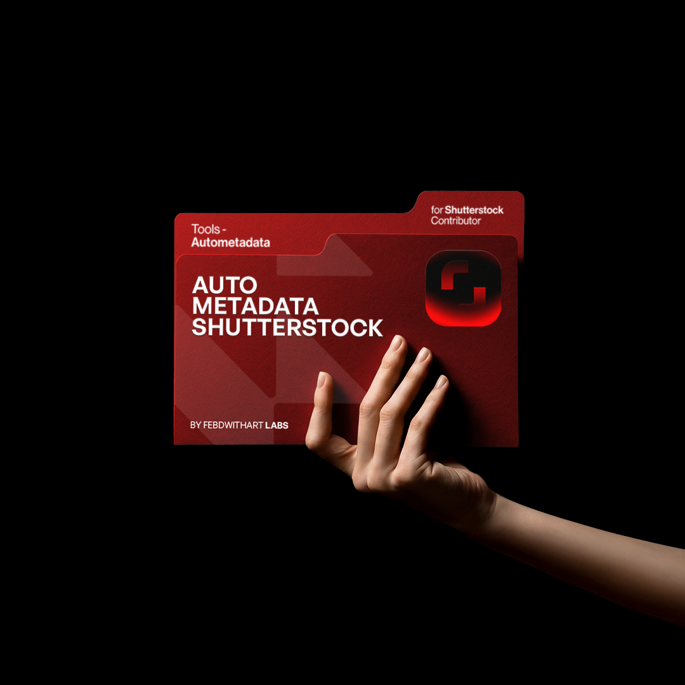

Auto Metadata Shutterstock
Extension Chrome yang mengisi title, kategori 1 & 2, serta 35 keyword relevan otomatis di Shutterstock Contributor, diproses dengan GPT-4o Vision dalam hitungan detik.
Apakah workflow Shutterstock ini terasa familiar?
Kalau upload rutin tiap hari, bagian metadata sering jadi proses yang paling menguras waktu.
Waktu habis input manual
Isi title, keyword, dan kategori satu per satu membuat proses upload jadi lambat.
Metadata kurang relevan
Keyword asal atau kategori kurang tepat bikin aset sulit muncul di hasil pencarian.
Bingung pilih kategori
Menentukan kategori 1 & 2 yang sesuai untuk setiap gambar sering bikin proses berhenti di tengah jalan.
Terjebak biaya bulanan
Banyak tools menarik biaya rutin padahal workflow belum tentu cocok dipakai jangka panjang.
Manual vs Auto Metadata
Lihat perbedaan waktu dan workflow secara langsung.
| Aspek | Cara Manual | Auto Metadata Shutterstock |
|---|---|---|
| Waktu per aset | 5–10 menit | ~18 detik |
| 100 gambar | ~8 jam kerja | ~30 menit |
| Kategori 1 & 2 | Dipilih manual | Dipilih AI |
| Keyword | Tebak manual | GPT-4o Vision |
| Bahasa Inggris | Perlu riset | Otomatis |
| Biaya | Waktu + tenaga | Sekali bayar |
Empat langkah, selesai
Setup sebentar, lalu workflow berjalan jauh lebih ringan.
Install Extension
Pasang extension Chrome. Proses kurang dari satu menit.
Masukkan API Key
Ikuti panduan pembuatan API Key lalu tempel ke extension.
Buka Shutterstock Contributor
Masuk ke halaman upload seperti biasa.
Generate Metadata
Klik generate title, kategori, dan keyword terisi otomatis.
Apa yang ada di dalamnya
Fitur yang dibuat khusus untuk workflow Shutterstock Contributor.
Page Context Bridge
Mengatasi keterbatasan React Shutterstock agar extension dapat bekerja lebih stabil.
Auto Kategori
AI memilih kategori 1 & 2 paling relevan berdasarkan isi visual gambar.
Isi Keyword Otomatis
Slot keyword terisi otomatis menggunakan istilah yang lebih relevan.
Adaptive Polling
Mendeteksi elemen lebih cepat tanpa delay yang membuang waktu.
Retry Mechanism
Item yang gagal bisa diproses ulang tanpa memulai dari awal.
Session Stats
Lihat statistik proses: total, sukses, gagal, dan progress sesi.
Yang berubah setelah workflow lebih cepat
Hemat waktu upload
Pekerjaan yang biasanya makan berjam-jam selesai jauh lebih cepat.
Lebih banyak aset tayang
Waktu yang tersisa bisa dipakai untuk produksi karya baru.
Peluang pencarian lebih baik
Keyword dan kategori yang relevan membantu karya lebih mudah ditemukan.
Sekali bayar
Tanpa biaya bulanan dan akses tetap aktif selamanya.
Lebih konsisten
Metadata tetap rapi dan seragam di setiap upload.
Fokus berkarya
Kurangi pekerjaan berulang dan kembali fokus membuat karya.
Kata pengguna
Auto kategori paling kerasa bedanya. Nggak perlu mikir kategori tiap upload.
Keyword terasa lebih rapi dibanding workflow manual yang biasa kupakai.
Setup cepat dan panduannya jelas. Tinggal pakai.
Pertanyaan umum
Tidak. Tool ini dibayar sekali saja dan bisa dipakai selamanya, tanpa biaya berulang.
Tidak termasuk. API Key OpenAI dibeli sendiri, tapi panduan setup lengkap sudah disertakan.
Belum. Tool berjalan di PC atau laptop melalui Google Chrome Extension.
Tool membantu mengisi form metadata; kamu tetap me-review hasil sebelum submit dan mengikuti aturan platform.
Tidak ada garansi refund. Silakan tanya dulu via WhatsApp bila masih ragu sebelum membeli.
- Berjalan di PC atau laptop melalui Google Chrome Extension.
- API Key OpenAI tidak termasuk.
- Bergantung pada struktur halaman Shutterstock; perubahan UI besar mungkin membutuhkan penyesuaian.
- Produk digital tidak mendukung refund setelah akses diberikan.
Penawaran harga promo terbatas. Setelah hitung mundur ini berakhir, harga kembali ke Rp 555.000.
Kurangi pekerjaan berulang mulai upload berikutnya.
Sekali bayar, pakai selamanya. Saatnya berhenti menghabiskan waktu untuk metadata manual.
Mulai Workflow Lebih Cepat - Rp 289.000